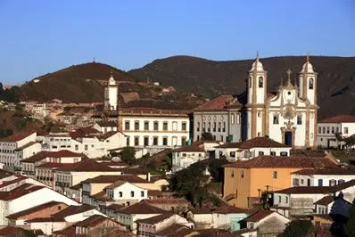
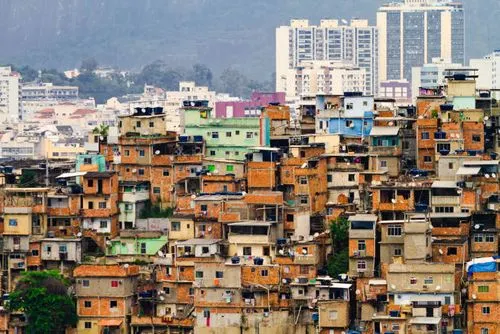
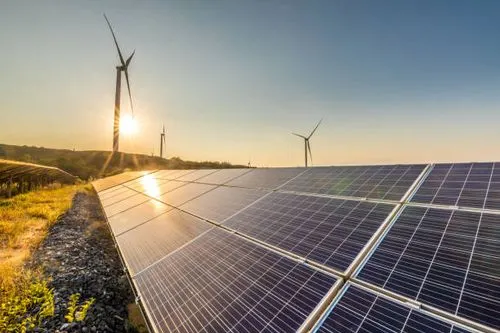

Uma Conexão Essencial
A conexão entre campo e cidade é uma relação de interdependência histórica e econômica: o campo produz alimentos e matérias-primas, enquanto a cidade transforma esses recursos e oferece serviços e produtos industrializados. Esse vínculo reflete modos de vida distintos, mas complementares, moldando a sociedade ao longo dos séculos. Com a urbanização e o êxodo rural, as cidades cresceram, enquanto o campo se modernizou, criando uma dinâmica complexa que envolve aspectos sociais, econômicos e ambientais. Essa relação é vital para a sustentabilidade e o equilíbrio do planeta.


História da Interdependência
Desde os tempos antigos, o campo e a cidade têm se influenciado mutuamente. A agricultura foi a base das primeiras civilizações, fornecendo alimentos e recursos para o surgimento das cidades. Vilas se transformaram em centros de comércio, cultura e inovação, enquanto o campo permanecia como o coração da produção. No Brasil, por exemplo, a economia colonial dependia das plantações de cana-de-açúcar e café, que abasteciam cidades como Salvador e Rio de Janeiro. Essa relação moldou não apenas a economia, mas também a cultura e a organização social.
Impactos da Urbanização
A urbanização trouxe mudanças profundas para o campo e a cidade. O crescimento das áreas urbanas frequentemente reduz terras agrícolas, mas também estimula a inovação no campo, como o uso de tecnologias para aumentar a produtividade. No Brasil, o agronegócio se modernizou com máquinas e técnicas avançadas, enquanto as cidades se tornaram hubs de processamento e distribuição. Contudo, a urbanização descontrolada pode levar a problemas como poluição e desigualdade social, exigindo um equilíbrio entre o crescimento urbano e a preservação rural.
Sustentabilidade
A sustentabilidade é o futuro da relação entre campo e cidade. Práticas agrícolas sustentáveis, como a agricultura orgânica e a rotação de culturas, preservam o solo e a biodiversidade. Nas cidades, iniciativas como hortas urbanas e o incentivo ao consumo de produtos locais fortalecem essa conexão. Além disso, tecnologias como energia renovável e sistemas de irrigação eficiente estão transformando o campo, enquanto as cidades investem em mobilidade sustentável e reciclagem. Juntos, campo e cidade podem construir um futuro mais equilibrado e resiliente.
